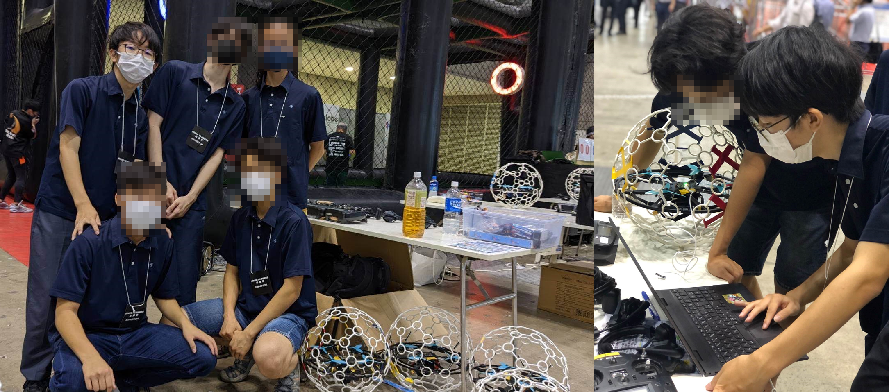

未来のレコメンドアルゴリズム開発者が登場！
高校生の定本一瑳
レコメンドアルゴリズム業界の有望な将来の担い手。
-

- 東京ビッグサイトのドローンサッカー国際大会での定本さん。試合直前のドローンの最終調整を行っている。
茨城、2023年 – これから日本のテック業界はどう変わるのか？その質問に答えるため、今回、私たちは、18歳の高校生の定本一瑳さんにスポットを当てる。
自己紹介
現在高校３年生の定本さんは、これから留学し、海外でAI、特にレコメンドアルゴリズムの最先端技術を習得して、社会を変えていきたいと言う。
彼は小さい頃から一貫してプログラミングやテクノロジーへの興味を持ち続け、今ではドローンサッカーやウェブ開発等に取り組んでいる。 将来の夢は、レコメンドアルゴリズムの分野を発展させ、それによって社会を変えることだ。
コンピューターサイエンスとの出会い
「昔からプログラミングが好きで、小学校からScratchでゲームを作ってPythonを学んでいました。中学ではLinuxに興味を持ち、 中古PCにArchOSをインストールして、サーバーとして自分のスマホのバックアップや、NASとして利用していましたね。」
そう語る定本さんは、現在ではウェブ開発やAI等、様々な分野に興味を持っている。 しかし、彼が今一番関心を有するのは、レコメンドアルゴリズムだ。
「２年前に日英１級翻訳士の資格を取得してから翻訳士としてフリーランスビジネスを立ち上げたのですが、その時に世界中から顧客を集められる、フリーランス求人プラットフォームを利用したんです。 そこで、データを利用して翻訳士とクライエントを合わせる、どちらにも利益になる繋がりを構築するプラットフォームのレコメンドアルゴリズムに興味が湧いて、 レコメンドアルゴリズムの開発をしたいと思うようになりました。レコメンドアルゴリズムは、GoogleやNetflix、ニュースアプリまで、ほぼ全てのインターネットサービスで使われています。 自分が将来仕事をする上で、一番社会に貢献できるのがレコメンドアルゴリズムの開発だと思っています。」
「適応力」の大切さ
定本さんによると、彼の一番の長所は技術力ではなく、「適応力」であると言う。
「私は１歳半からスリランカ、カナダ、ガーナ、日本と、中学生の時まで４年間毎に異なる国で新しい環境に対応する事を経験してきました。
その影響で友達を作らなくなる人や、どうせ環境が変わるからと、与えられた機会を活用しない人もいる中、私は住む国が変わるたびに、たくさんの人と関係を構築し、
与えられた機会は積極的に利用してきました。 今でも、１０年前に知り合ったガーナ時代の友達とは頻繁に連絡を取り合っていて、
中学生の時に一人でカザフスタンを訪問してその友人宅にホームステイしました。 友人もコンピューターサイエンスを大学で専攻する予定らしいです（笑）。
また、日本の中学校に入学するまでは海外で英語で授業を受けていた為、入学後は今まで習った事を全て日本語で覚え直したり、中学３年生以降は学寮に入り、親と離れた環境で生活しています。
様々な環境の変化を通して、どんな環境にも適応して自分の力を発揮する事ができるようになりました。 『適応力』、つまり異なる環境への対応力と、ただ慣れるだけではなくその環境を活かす力は、
私の最大の強みだと思います。 新しい技術や企業が次々と登場しては消え、著しい速度で変容していくIT業界では、『適応力』は非常に大事だとどの開発者も考えているのではないでしょうか。
留学においても私は新しい環境に慣れて、その環境を最大限に活かす事ができると思います。」
論理的思考力の重要性、新しいものを試す気持ち
また、定本さんがコンピューターサイエンスに関心を持つ理由には、論理的思考ができ、そして新しいことが常に試せる環境であるから、という背景がある。 実は、彼はプログラミングだけではなく、英語ディベートやドローンサッカーという全く別の分野においても熱心に取り組んで結果を残している。
「論理的思考力は自分の長所であり、大事だと思う部分ですね。ガーナでは論理的に考えるのが試される数学オリンピック等に参加していましたが、 高校では英語ディベートを通して自分の論理的思考力とそれを伝える力を試したい、という考えで参加しました。 学校にディベートチームが存在しなかったため、 チームを設立し、全員未経験者のチームメンバーで一年間本気で取り組んだ結果、チームでは県優勝、個人では県最優秀賞を獲得しました。 試合では相手の論理展開において、 証拠のない仮定や、論理の矛盾や飛躍を瞬時に指摘するのですが自分の批判的思考力が試されて、とても疲れますが、楽しい経験でした。 また、大会で審査官に勝敗結果の説明を受けるときは、 自分の論理展開の評価、そしてそれがどれくらい審査官に伝わったかがわかり、とても勉強になりました。 論理的な考えが大変重要なプログラミングの分野では、 この経験を基に、わかりやすい、そして穴のないコードの書き方を学んでいきたいです。」
「ドローンサッカーは、ディベート活動をしている同時期に始めました。新しいものを何か始めたいと考える中、ドローン講習会に参加できる機会が学校であり、
そこでドローンサッカーチームを友達と共に設立しました。私はチームメンバーと一緒にドローンの操縦を学びつつ、 パソコンからリモコンとドローンのモーターの出力の関係や、
ドローンのモーターが起動する角度の調整方法等を自力で学びました。今まで様々なソフトウェアに触れたりプログラミングなどはしてきましたが、
それを通して現実の機械を動かすのは初めての経験だったので、風やバッテリーの消耗など、予想しなかった変数を考慮する必要性を学び、大変勉強になりました。
結果、前年全国１位だった楽天の社会人チームに勝利し、国際大会の出場等を通し、チームで全国３位になりました。
新しいことを始めるのが好きな私は、ドローンサッカーで新しい挑戦をする楽しさと、新しい経験から新しい学びをできる事を再認識できました。
留学でもこの挑戦力を基に、大学内外で幅広い活動に挑戦して、結果を残すことができると思います。」
コンピューターに対する熱意
「小さい頃の私のゲームを作りたいという想像力を実現可能にしたプログラミング言語、翻訳業のビジネス展開を可能にしたオンラインプラットフォーム、 ドローンサッカーでチームの為になることを可能にした専用ソフトウェア。私はコンピューターの、人の関心や挑戦をさらに広げ、人の自己実現を手助けし、 可能にする性質が大好きです。 これからはその中でも、レコメンドアルゴリズムを通して、ITの人の自己実現を可能にする性質を更に発展させ、社会に貢献するため、 私は大学で技術力を習得し、 開発者として人々の要望を実現可能にする技術をさらに発展させていきたいです。」
この高校生は、海外留学を通して社会に貢献したいと熱弁した。彼の将来のテクノロジー業界での活躍を期待しています。